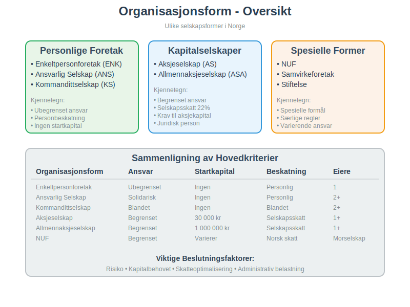
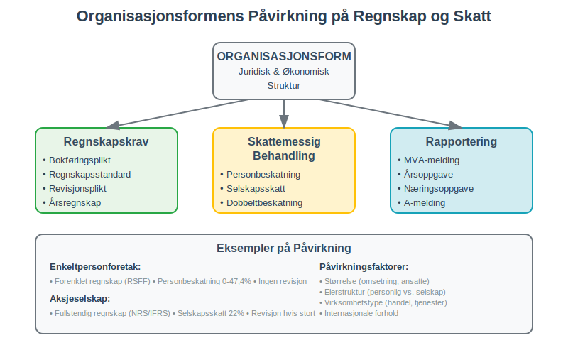
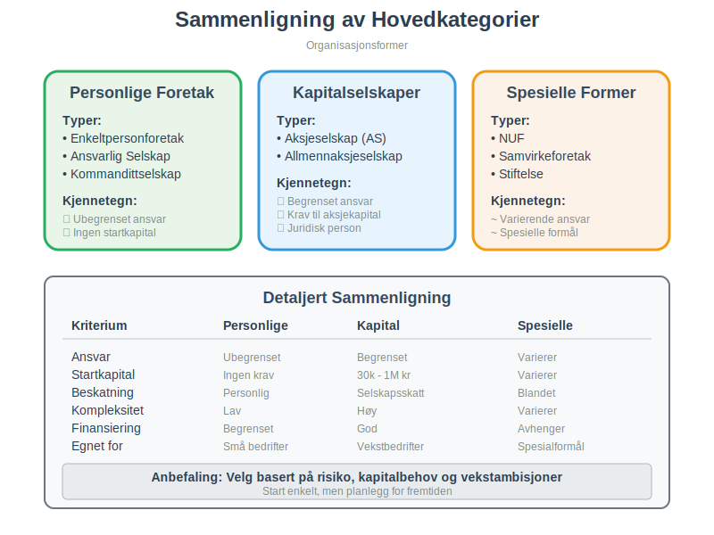
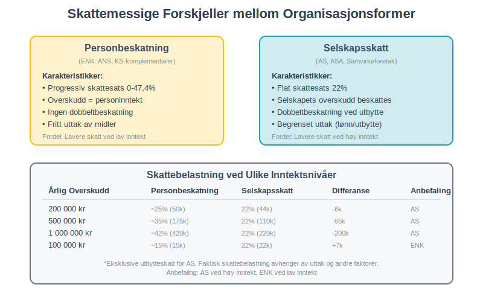
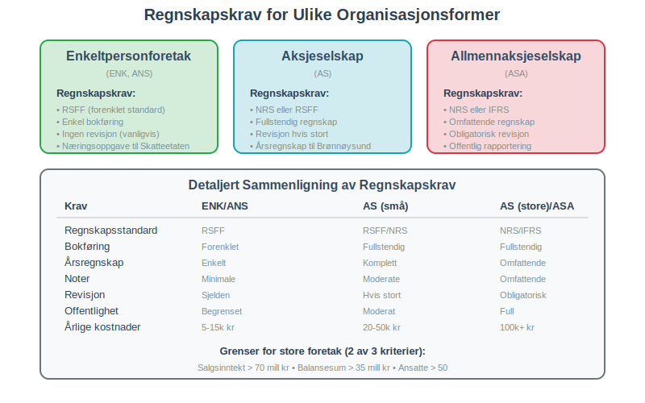
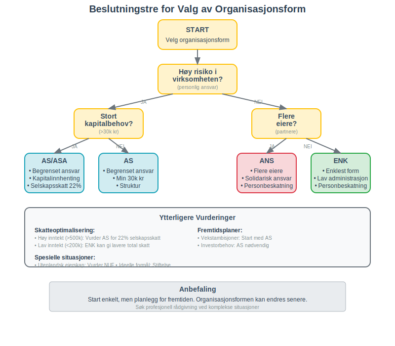
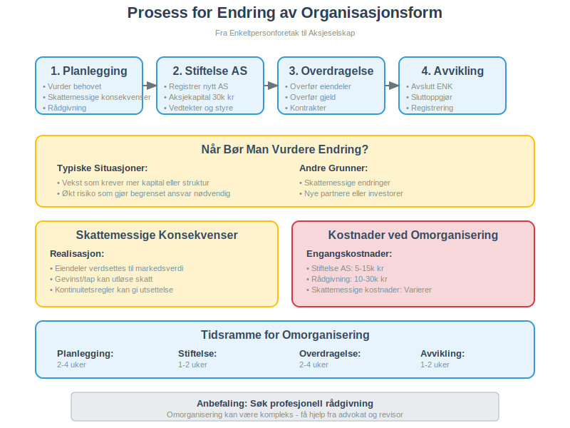
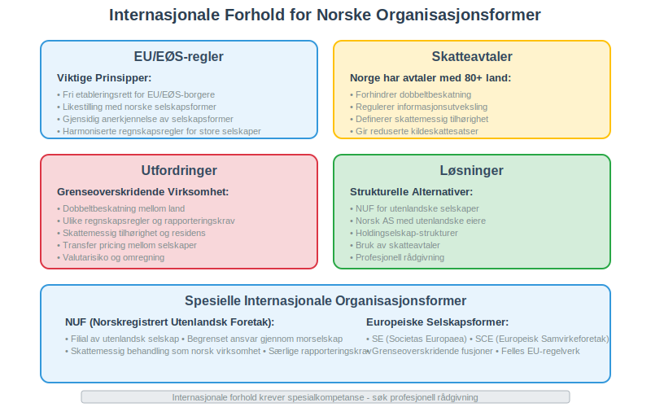
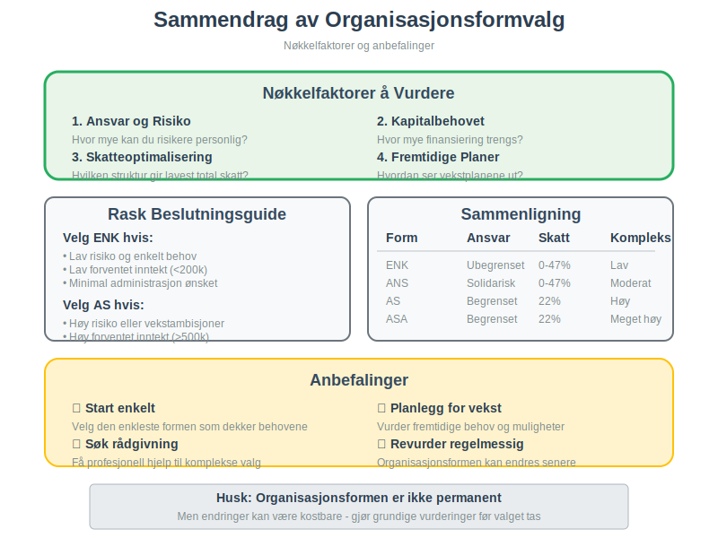

Organisasjonsform er den juridiske og økonomiske strukturen som definerer hvordan en virksomhet er organisert, eiet og drevet. Valg av organisasjonsform er en av de viktigste beslutningene en gründer må ta, da det påvirker alt fra personlig ansvar og beskatning til kapitalstruktur og regnskapskrav.
Foretaksmodellen brukes ofte for å beskrive hvordan regnskaps- og skattemessige vurderinger skal utføres for ulike selskapsformer. Les mer i Foretaksmodellen. For en mer fokusert oversikt over ulike selskapsformer, se Selskapsform.

Hva er Organisasjonsform?
En organisasjonsform definerer den juridiske rammen for hvordan en virksomhet skal drives og organiseres. Den bestemmer:
- Eierstruktur - hvem som eier virksomheten
- Ansvarsfordeling - hvem som har ansvar for gjeld og forpliktelser
- Beskatning - hvordan overskudd og tap behandles skattemessig
- Kapitalstruktur - krav til startkapital og finansiering
- Styring og kontroll - hvordan beslutninger tas
- Regnskapskrav - hvilke regnskaps- og rapporteringskrav som gjelder
Betydning for Regnskapet
Organisasjonsformen påvirker direkte regnskapsmessige forhold som:
- Bokføringsplikt og regnskapsstandard
- Revisjonsplikt og kontrollkrav
- Skattemessig behandling av inntekter og kostnader
- Krav til årsregnskap og rapportering

Hovedkategorier av Organisasjonsformer
Personlige Foretak
Personlige foretak kjennetegnes ved at eierne har ubegrenset personlig ansvar for virksomhetens forpliktelser:
Ideelle Organisasjoner
Stiftelser
Stiftelser er juridiske personer uten eiere, opprettet for allmennyttige eller spesielle formål:
- Formålsbundet - virksomheten må være i tråd med vedtektenes formål
- Ingen eiere - ingen personer har eiendomsrett til stiftelsens kapital
- Minimum NOK 100.000 i grunnkapital
- Skattefordeler mulig for allmennyttige stiftelser
- Særegne regnskapsregler og rapporteringskrav
Enkeltpersonforetak (ENK)
Enkeltpersonforetaket er den enkleste organisasjonsformen:
For praktisk oppstart, se også Starte Enkeltpersonforetak.
- Én eier som driver virksomheten i eget navn
- Ubegrenset personlig ansvar for alle forpliktelser
- Ingen startkapital kreves
- Personbeskatning - overskudd beskattes som personinntekt
- Enkel oppstart og administrasjon
Ansvarlig Selskap (ANS)
Et ansvarlig selskap har flere eiere:
- To eller flere deltakere som driver virksomhet sammen
- Ubegrenset og solidarisk ansvar for alle deltakere
- Selskapsavtale regulerer forholdet mellom deltakerne
- Personbeskatning for alle deltakere
Kommandittselskap (KS)
Kommandittselskapet kombinerer ulike ansvarsformer:
- Komplementarer med ubegrenset ansvar (aktive eiere)
- Kommandittister med begrenset ansvar (passive investorer)
- Fleksibel struktur for investeringsformål
- Blandet beskatning avhengig av rolle
Kapitalselskaper
Kapitalselskaper er egne juridiske personer med begrenset ansvar for eierne:
Aksjeselskap (AS)
Aksjeselskapet er den mest populære selskapsformen:
- Begrenset ansvar for aksjonærene
- Minimum 30 000 kr i aksjekapital
- Vedtekter som definerer selskapsstrukturen
- Selskapsskatt på 22% av overskudd
- Eget rettssubjekt med styre og generalforsamling
- Mulighet for ekstern kapitalinnhenting
Allmennaksjeselskap (ASA)
For større selskaper med behov for børsnotering, se vår guide om Hva er ASA? En Guide til Allmennaksjeselskap (ASA).
- Minimum 1 000 000 kr i aksjekapital
- Strengere krav til rapportering og styring
- Kan noteres på børs
- Høyere grad av offentlighet og transparens
Spesielle Organisasjonsformer
Norskregistrert Utenlandsk Foretak (NUF)
NUF-selskapsformen for utenlandske selskaper:
- Filial av utenlandsk selskap
- Begrenset ansvar gjennom morselskapet
- Særlige regnskaps- og rapporteringskrav
- Skattemessig behandling som norsk virksomhet
Samvirkeforetak
Basert på demokratiske prinsipper:
- Medlemseierskap med demokratisk styring
- Åpen medlemskap for kvalifiserte medlemmer
- Overskudd fordeles etter medlemmenes deltakelse
- Vanlig innen landbruk, handel og tjenester
Stiftelse
For ideelle og allmennyttige formål:
- Ingen eiere - styres av et styre
- Formålsbundet virksomhet
- Kan ikke dele ut overskudd til private
- Ofte skattefritak for allmennyttige aktiviteter

Detaljert Sammenligning av Organisasjonsformer
Ansvar og Risiko
| Organisasjonsform | Type Ansvar | Omfang | Risiko for Eier |
|---|---|---|---|
| Enkeltpersonforetak | Ubegrenset personlig | All gjeld og forpliktelser | Høy - personlig økonomi |
| Ansvarlig Selskap | Ubegrenset solidarisk | All gjeld, alle deltakere hefter | Høy - solidarisk ansvar |
| Kommandittselskap | Blandet | Komplementarer ubegrenset, kommandittister begrenset | Variabel |
| Aksjeselskap | Begrenset | Kun innskutt kapital | Lav - begrenset til aksjekapital |
| Allmennaksjeselskap (ASA) | Begrenset | Kun innskutt kapital | Lav - begrenset til aksjekapital |
| NUF | Begrenset | Gjennom morselskap | Lav - morselskapet hefter |
Kapital og Finansiering
| Organisasjonsform | Startkapital | Kapitalinnhenting | Finansieringsmuligheter |
|---|---|---|---|
| Enkeltpersonforetak | Ingen krav | Personlig kapital | Begrenset - personlig kreditt |
| Ansvarlig Selskap | Ingen krav | Deltakernes kapital | Moderat - solidarisk ansvar |
| Kommandittselskap | Ingen krav | Komplementar + kommandittist | God - passive investorer |
| Aksjeselskap | 30 000 kr | Aksjeemisjon | Meget god - aksjer og lån |
| Allmennaksjeselskap (ASA) | 1 000 000 kr | Børsnotering mulig | Utmerket - offentlig marked |
| NUF | Varierer | Gjennom morselskap | Avhenger av morselskap |
Skattemessige Forhold
| Organisasjonsform | Beskatningsnivå | Skattesats | Dobbeltbeskatning | Uttak |
|---|---|---|---|---|
| Enkeltpersonforetak | Personlig | 0-47,4% (progressiv) | Nei | Fritt |
| Ansvarlig Selskap | Personlig | 0-47,4% (progressiv) | Nei | Etter avtale |
| Kommandittselskap | Blandet | Varierer | Delvis | Etter rolle |
| Aksjeselskap | Selskap + person | 22% + utbytteskatt | Ja | Begrenset |
| Allmennaksjeselskap (ASA) | Selskap + person | 22% + utbytteskatt | Ja | Begrenset |
| NUF | Norsk selskapsskatt | 22% | Avhenger av hjemland | Etter regler |

Regnskapsmessige Konsekvenser
Bokføringsplikt og Regnskapsstandard
Alle registrerte foretak har bokføringsplikt:
Små Foretak
- Regnskapsstandard for små foretak (RSFF)
- Forenklet rapportering
- Færre notekrav
- Gjelder de fleste ENK, ANS og små AS
Store Foretak
- Norsk regnskapsstandard (NRS) eller IFRS
- Utvidede rapporteringskrav
- Omfattende noteopplysninger
- Gjelder store AS, ASA og konsern
Revisjonsplikt
Revisjonsplikt avhenger av størrelse og organisasjonsform:
Fritatt for Revisjon
Små foretak som oppfyller to av tre kriterier:
- Salgsinntekt under 70 millioner kr
- Balansesum under 35 millioner kr
- Gjennomsnittlig under 50 ansatte
Revisjonspliktige
- Allmennaksjeselskaper (ASA)
- Store aksjeselskaper som overskrider grensene
- Morselskaper i konsern
- Foretak med særlige samfunnsinteresser
MVA-registrering og Rapportering
MVA-registrering kreves når:
- Omsetning av avgiftspliktige varer/tjenester overstiger 50 000 kr årlig
- Virksomheten driver avgiftspliktig aktivitet
- Import av varer til Norge
Rapporteringsfrekvens avhenger av omsetning:
- Månedlig for omsetning over 1 million kr
- To-månedlig for omsetning 50 000 - 1 million kr
- Årlig for små virksomheter under visse betingelser

Valg av Organisasjonsform - Beslutningskriterier
1. Risikovurdering
Spørsmål å stille:
- Hvor stor er risikoen i virksomheten?
- Hvor mye personlig formue kan du risikere?
- Finnes det forsikringsløsninger som reduserer risiko?
- Er det behov for å skille privat og bedriftens økonomi?
Anbefaling:
- Høy risiko → Velg kapitalselskap (AS/ASA)
- Lav risiko → Personlig foretak kan være aktuelt
- Usikker risiko → Start med AS for sikkerhet
2. Kapitalbehovet
Vurderingsfaktorer:
- Hvor mye startkapital trengs?
- Er det behov for ekstern finansiering?
- Planlegges vekst som krever kapitalinnhenting?
- Skal det tas inn partnere eller investorer?
Anbefaling:
- Stort kapitalbehov → AS eller ASA
- Lite kapitalbehov → ENK eller ANS
- Investorbehov → AS med mulighet for aksjeemisjon
3. Skatteoptimalisering
Skattemessige hensyn:
- Forventet inntektsnivå og skattesats
- Behov for å beholde overskudd i virksomheten
- Planlagt uttak av midler
- Muligheter for skatteplanlegging
Anbefaling:
- Høy personlig skattesats → Vurder AS for 22% selskapsskatt
- Lavt inntektsnivå → ENK kan gi lavere total skatt
- Reinvestering → AS gir mulighet for skattemessig utsettelse
4. Administrativ Belastning
Faktorer å vurdere:
- Tid og ressurser til administrasjon
- Regnskaps- og rapporteringskrav
- Styring og møtevirksomhet
- Kostnader til revisjon og rådgivning
Anbefaling:
- Enkel drift → ENK har lavest administrativ belastning
- Profesjonell drift → AS gir struktur og troverdighet
- Vekstambisjoner → AS forbereder for fremtidig kompleksitet

Endring av Organisasjonsform
Når Bør Man Vurdere Endring?
Typiske situasjoner:
- Vekst som krever mer kapital eller struktur
- Økt risiko som gjør begrenset ansvar nødvendig
- Skattemessige endringer som påvirker optimal struktur
- Nye partnere eller investorer kommer inn
- Internasjonalisering som krever annen struktur
Prosess for Omorganisering
Fra ENK til AS
- Stiftelse av nytt aksjeselskap
- Overdragelse av eiendeler og gjeld
- Skattemessig behandling av overdragelsen
- Avvikling av enkeltpersonforetaket
- Registrering av endringene
Skattemessige Konsekvenser
- Realisasjon av eiendeler kan utløse skatt
- Kontinuitetsregler kan gi skattemessig utsettelse
- Rådgivning anbefales for optimal gjennomføring
Kostnader ved Omorganisering
| Type Kostnad | Estimat | Beskrivelse |
|---|---|---|
| Stiftelseskostnader | 5 000 - 15 000 kr | Registrering, advokat, revisor |
| Skattemessige kostnader | Varierer | Avhenger av realisasjonsgevinster |
| Løpende merkostnader | 20 000 - 50 000 kr/år | Regnskap, revisjon, administrasjon |
| Rådgivning | 10 000 - 30 000 kr | Juridisk og skattemessig bistand |

Internasjonale Forhold
Grenseoverskridende Virksomhet
Utfordringer:
- Dobbeltbeskatning mellom land
- Ulike regnskapsregler og rapporteringskrav
- Skattemessig tilhørighet og residens
- Transfer pricing mellom selskaper
EU/EØS-regler
Viktige prinsipper:
- Fri etableringsrett for EU/EØS-borgere
- Likestilling med norske selskapsformer
- Gjensidig anerkjennelse av selskapsformer
- Harmoniserte regnskapsregler for store selskaper
Skatteavtaler
Norge har skatteavtaler med over 80 land som:
- Forhindrer dobbeltbeskatning
- Regulerer informasjonsutveksling
- Definerer skattemessig tilhørighet
- Gir reduserte kildeskattesatser

Fremtidige Utviklingstrekk
Digitalisering og Automatisering
Påvirkning på organisasjonsformer:
- Forenklede stiftelsesprosesser gjennom digitale løsninger
- Automatisert rapportering reduserer administrativ belastning
- Nye forretningsmodeller krever tilpassede strukturer
- Blockchain og smart contracts kan endre eierstrukturer
Bærekraft og ESG
Økende fokus på:
- Miljørapportering og bærekraftskrav
- Samfunnsansvar og etiske standarder
- Governance og styringsprinsipper
- Stakeholder-kapitalisme vs. aksjonærfokus
Regulatoriske Endringer
Forventede utviklinger:
- EU-harmonisering av selskapsrett
- Skjerpede rapporteringskrav for bærekraft
- Digitale selskapsformer og virtuelle generalforsamlinger
- Grenseoverskridende fusjoner og oppdelinger
Konklusjon
Valg av organisasjonsform er en fundamental beslutning som påvirker alle aspekter av virksomhetsdriften. De viktigste faktorene å vurdere er:
Nøkkelfaktorer
- Ansvar og risiko - hvor mye kan du risikere personlig?
- Kapitalbehovet - hvor mye finansiering trengs?
- Skatteoptimalisering - hvilken struktur gir lavest total skatt?
- Administrativ belastning - hvor mye tid og ressurser har du?
- Fremtidige planer - hvordan ser vekstplanene ut?
Anbefalinger
- Start enkelt - velg den enkleste formen som dekker behovene
- Planlegg for vekst - vurder fremtidige behov
- Søk rådgivning - få profesjonell hjelp til komplekse valg
- Revurder regelmessig - organisasjonsformen kan endres
Organisasjonsformen er ikke permanent, men endringer kan være kostbare og komplekse. Det lønner seg derfor å gjøre grundige vurderinger før valget tas, og å søke profesjonell rådgivning når det er nødvendig.
